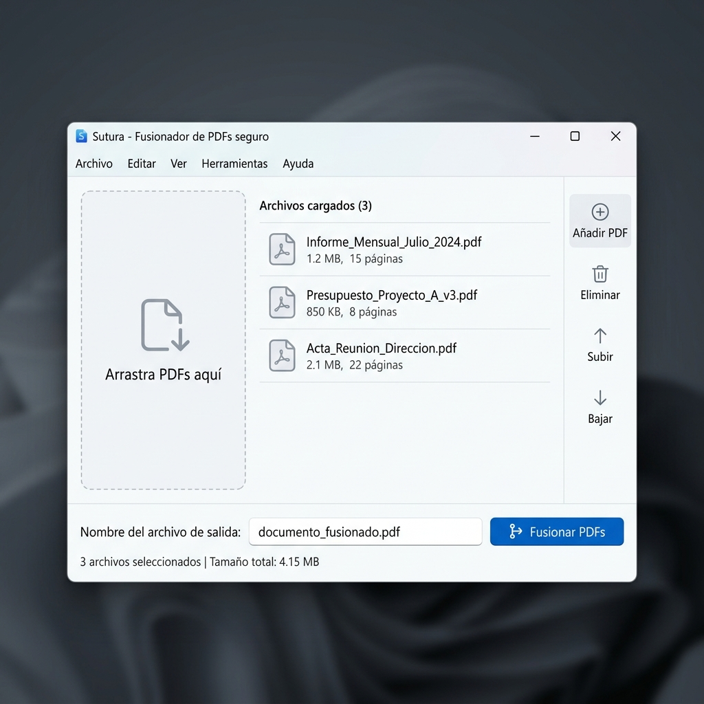

Sutura garantiza la privacidad de tus documentos fusionando archivos PDF de forma completamente local. Diseñado para profesionales que manejan información sensible.

Cada función diseñada para la máxima productividad y privacidad de tus documentos.
Tus documentos nunca salen de tu equipo. Sin servidores externos, sin exposición a la red. Privacidad total.
Arrastra y suelta tus archivos PDF directamente en la aplicación. Interfaz intuitiva sin curva de aprendizaje.
Reordena los documentos con controles intuitivos antes de fusionarlos. Obtén el resultado exacto que necesitas.
Motor de procesamiento optimizado que fusiona múltiples PDFs en segundos, sin importar el tamaño de los archivos.
Diseño moderno, limpio y accesible. Una interfaz que se adapta a flujos de trabajo profesionales exigentes.
Registro detallado de todas las operaciones realizadas. Trazabilidad completa para auditorías y control de calidad.
Descarga la última versión estable y empieza a fusionar tus PDFs con total privacidad.
Herramienta de fusión de PDFs offline lista para entornos profesionales. Incluye drag & drop, reordenación intuitiva y sistema de logs exportable.
Descargar desde GitHubExplora el código, contribuye y forma parte de la comunidad.
Revisa el código fuente, reporta issues, proporciona feedback o contribuye al proyecto con mejoras y nuevas funcionalidades.
Ver repositorio →Si te gusta Sutura y quieres apoyar su desarrollo, puedes hacerlo con una donación o simplemente compartiendo el proyecto con otros profesionales.